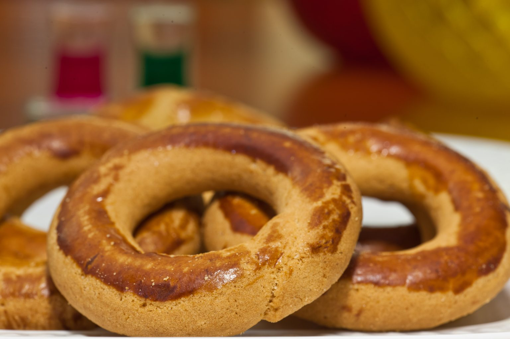

Benvenuti a Casa Irrera.
Pignolata, cannoli, frutta martorana e i dolci delle feste: la ricetta è centenaria, la spedizione arriva in tutta Italia in 24 ore, in confezione refrigerata.
Quattro tradizioni, una casa.
Lo shop è diviso come il laboratorio: ogni sezione una lavorazione, ogni lavorazione una storia.

Il nostro forno
biscotteriaCiambelline, frollini e biscotti da credenza, sfornati ogni giorno.

Le nostre specialità
i classiciPignolata, cannoli e cassata: i dolci che hanno fatto il nome della casa.

Le mandorle secondo noi
pasta realePaste, fior di mandorlo e marzapane, dalla mandorla siciliana.

I dolci delle feste
a stagioneMartorana, agnelli pasquali e i lievitati delle ricorrenze.

Torta Letizia
Un dolce unico ed esclusivo della nostra tradizione: mandorla, semplicità e una ricetta che non si tocca dal secolo scorso.
Le radici, dal 1910.
La pasticceria Irrera nasce a Messina nel 1910 e attraversa il secolo restando quello che era: un laboratorio di alta pasticceria siciliana. Oggi Casa Irrera ne eredita ricette e mestiere.
La produzione è una sola, in via Maregrosso 36; il punto vendita è in via Santa Cecilia. Tutto quello che parte per l’Italia esce da quelle stanze, in confezione refrigerata.
Ordina i tuoi dolci preferiti, dove vuoi.
Le spedizioni partono per tutta l’Italia in confezione refrigerata; a Messina arrivano anche con Glovo e Just Eat.